Zoomen Sie mit Hilfe des Kombinationsfelds Zoom 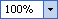
Seit 2022b unterstützt Origin die Verwendung der Syntax Origin Rich Text im Notizfenster.
Mit Rich Text hat das Notizfenster zwei Modi -- den Rohtextmodus und den Rendermodus. Wechseln Sie zwischen diesen Modi über Notizen: Rendermodus oder die Tastenkombination Strg + M.
Um Text in das Notizfenster einzufügen, müssen Sie im Rohtextmodus sein. Um den Stil des hinzugefügten Texts zu bearbeiten, verwenden Sie die Symbolleiste Format und/oder wenden Sie vordefinierte Absatzstile an.
Zoomen Sie mit Hilfe des Kombinationsfelds Zoom  |
Wenn Sie zur Syntax Origin Rich Text wechseln, sind die Schaltflächen der Symbolleiste Format (Griechisch, Hoch-/Tiefgestellt etc.) verfügbar. Sie können die Schaltfläche verwenden, um den Text im Notizfenster zu formatieren.
Abgesehen von den Schaltflächen können Sie auch die folgende Syntax eingeben, um den Text zu formatieren.
| Syntax | Beschreibung | Eingabe ... | Ergebnisse in .... |
|---|---|---|---|
| \+(text) | Formatiere text als hochgestellt. | super\+(script) | 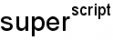 |
| \-(text) | Formatiere text als tiefgestellt. | sub\-(script) | 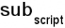 |
| \=(text1,text2) | Formatiere text1 als tiefgestellt, text2 als hochgestellt. | script\=(sub,super) | 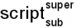 |
| \p%pointsize(text) | Ändere die Punktgröße von text. 200 verdoppelt die Größe, 100 Ergebnisse zieht keine Änderung nach sich usw. | change\p200(point)size | 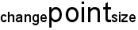 |
| \i(text) | Formatiere text als kursiv. | \i(italics) | |
| \b(text) | Formatiere text als fett. | \b(bold) | |
| \u(text) | Formatiere text als unterstrichen. | \u(underline) | |
| \g(text) | Formatiere text als griechische Symbole. | \g(Greek) | 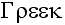 |
| \ab(text) | Zeige einen Balken über text. | \ab(X) | 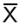 |
| \ad(text) | Zeige eine kurze Linie - einen Punkt - über text an. | \ad(A) | 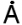 |
| \at(text) | Zeige einen Tilde über text. | \at(A) | 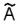 |
| \(ASCII Symbolcode) | Zeigt ein festgelegtes ASCII-Symbol an. | \(169) | |
| \y(') \y(") |
Zeigt eine Prime in voller Höhe oder ein Double Prime in voller Höhe an. Um es als kombiniertes Prime/Double Prime anzuzeigen, verwenden Sie hochgestellten Text wie \+(\y(')) or \+(\y(")). | \g(c)\=(3,\y(')) | 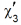 |
| \f:fontname(text) | Zeigt text mit Hilfe des Zeichensatzes fontname an. Fontname lässt sich abkürzen, solange Sie genügend Buchstaben einsetzen, damit vorhandene Namen eindeutig bleiben. | \f:Wide Latin(font) | |
| \cnumber(text) | Zeigt text in der Farbe an, die an der Position Nummer in der Auswahlliste Farbe steht. | \c2(red) | |
| \x(unicode number) | Die Unicode-Zeichen werden angezeigt. |
\x(03b8) | |
| \sc | Fügen Sie ein bedingtes horizontales Leerzeichen in eine Zeichenkette ein, auch wenn es dort mehrere aufeinander folgende Leerzeichen gibt. |
In diesem Beispiel wird angenommen, dass @LD3 und @LD4 nicht existieren, so dass es zwei Leerzeichen gibt. \sc make one space only\b(%(1Y,@LL)\sc%(1Y,@LD3)\sc%(1Y,@LD4)\sc(%(1Y,@LU))) |
LName (Unit) |
|
\(text\) |
Zeigen Sie das LaTex-Format an. Seit 2025 muss der Text nicht mehr innerhalb von \q( ) eingegeben werden, um das LaText-Format anzuzeigen. |
\(\varphi_{\mu, \sigma^{2}}(X)\) |
Hinweis: Einige Escape-Sequenzen sind eventuell nicht in der obigen Tabelle aufgeführt. Sie können weitere auf dieser Seite finden.
Beim Bearbeiten von Notizfenstern mit der Syntax Origin Rich Text können Sie nicht nur Diagramme, Arbeitsblattzellen, Variablen-Links und Arbeitsblätter über das Hauptmenü Notizen oder das Kontextmenü des Notizfensters hinzufügen, sondern auch die Abbildung der Symbole, LaTeX-Gleichungen, Links und Bilder aus Datei/Web in die Notizen einfügen.
Der Dialog Diagramm-/Bildbrowser wird angezeigt. Wählen Sie dann das Diagramm, das Sie einfügen möchten. Der Standardwert der Diagrammbreite ist 300. Sie können die Systemvariable @IMGA verwenden, um den Wert der Standardbreite des Diagramms benutzerdefiniert anzupassen.
oder
\img(Graph1, w=500)
oder
%([Book1]Sheet1!,A,2,W)
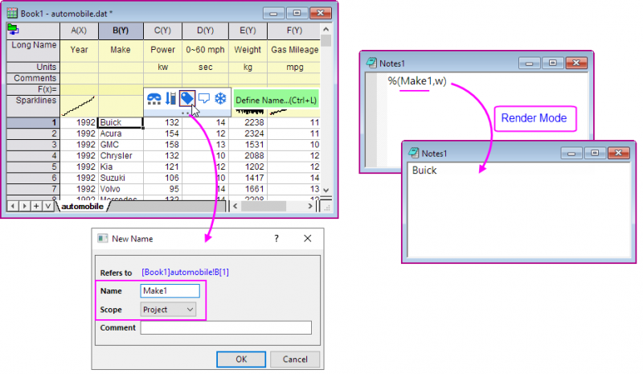
oder
\img([Book4]Sheet1)
Dies öffnet den Dialog Neue Tabelle zum Konfigurieren einer einfachen Tabelle.
Dies öffnet den vereinfachten Dialog Abbildung Symbole mit Zeichen, die nach Registerkarten sortiert sind.
Mehr zur Verwendung der Abbildung Symbole finden Sie unter Abbildung Symbole und Abbildung Zeichen.
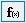
klicken, um eine Liste von Origins Anpassungsfunktionen (inkl. Ihrer benutzerdefinierten Funktionen) zu öffnen. Wählen Sie eine Funktion oder geben Sie eine Gleichung in das obere Feld ein. Die Vorschau wird im unteren Bedienfeld gerendert. Siehe auch dieses Dokument.Weitere Beispiele finden Sie im Menü Notizen: Beispiele laden: LaTeX Equations.txt.
Hinweis: In Versionen älter als Origin 2023b öffnet das Kontextmenü Einfügen: LaTeX-Gleichung die App LaTeX Equation Editor. (Falls Sie diese kostenlose App noch nicht installiert haben, werden Sie dazu aufgefordert).
Öffnet einen Dialog zum Eingeben des anzuzeigenden Textes und eines Links. Es können mehrere Linktypen eingegeben werden, zum Beispiel:
Zusätzlich können Sie einfache LabTalk-Befehle aus dem Link-Feld ausführen (z. B. labtalk://"ty -b[Hello World!]")
Beispielsyntax wie im Rohtextmdous angezeigt, Notizfenster:
\link(labtalk://"ty -b [Hello World!]", Hello World!)
Klicken Sie im Rendermodus auf den Text im Notizfenster. Es wird ein Warnfeld aufgerufen, dass die Worte "Hello World" enthält.
Öffnet einen Dialog zum Durchsuchen von Bilddateien.
Beispielsyntax wie im Rohtextmdous angezeigt, Notizfenster:
\img(file://"%@JSamples\Image Processing and Analysis\car.bmp", w=1000)
Das Zeichenkettenregister %@J im obigen Beispiel gibt den Pfad des Origin-Verzeichnisses aus. |
Öffnet einen Dialog, um einen Bildlink für ein Web-Bild festzulegen (Hinweis: Klicken Sie in Ihrem Browser mit der rechten Maustaste auf ein Bild und dann auf Bildadresse kopieren, Bildlink kopieren etc).
Beispielsyntax wie im Rohtextmdous angezeigt, Notizfenster:
\img(https://www.originlab.com/images/header_logo.png, w=200)
In Origin können Sie den Standardtextstil auf den Absatz anwenden.
Wenn der Cursor sich im Absatz befindet, klicken Sie mit der rechten Maustaste, um das Menü zu öffnen. Sie können den Absatzstil in der Liste auswählen.
Sie können den neuen Stil auch mit dem Hilfsmittel Textstil modifizieren definieren.
| Zu modifizierender Stil | Wählen Sie einen Stil in der Liste aus, um ihn zu modifizieren. Wenn Sie <Neu>... auswählen, wird der Dialog Neuer Stilname aufgerufen. Sie können den Namen für einen neuen Stil definieren. |
|---|---|
| Schrifttyp | Wählen Sie aus dieser Auswahlliste eine Schrifttyp für den Absatz aus. |
| Größenfaktor (%) | Geben Sie die gewünschte Textgröße (in Punkten) ein bzw. wählen Sie diese aus. |
| Farbe | Wählen Sie aus dieser Auswahlliste die gewünschte Textfarbe aus. Erstellen Sie benutzerdefinierte Farben, indem Sie auf die Schaltfläche Benutzerdefinierte Farben definieren klicken und die RGB-Werte im aufgerufenen Dialog Farbe festlegen. |
| Blocksatz | Aktivieren Sie dieses Kontrollkästchen. Sie können dann Links, Zentriert oder Rechts als Absatzausrichtung auswählen. |
| Schriftstil |
|
| Abstände |
|
| Einrückung (% der Schriftgröße) |
|
| Liste | Legen Sie diesen Textstil mit Stichpunkt- oder Aufzählungsliste fest. |
| Syntax | Beschreibung | Beispiel |
|---|---|---|
| color or c | Legen Sie die Farbe des Absatztextes mit dem Farbindex fest. Bitte beziehen Sie sich auf den Farbindex der Standardfarbliste. Falls Sie keine Farbe festlegen möchten, ist der Text standardmäßig schwarz. |
color:6 |
| p | Legen Sie die Prozent der Textgröße (in Punkten) fest. | p:175 |
| f | Legen Sie den Schrifttyp des Absatztextes mit dem Schriftnamen fest. | f:Times New Roman |
| lineSpacing | Legen Sie die Prozent des Absatz der Textzeile fest. | lineSpacing:100 |
| beforeSpacing | Legen Sie die Prozent des Abstands vor dem Absatz fest. | beforeSpacing:150 |
| afterSpacing | Legen Sie die Prozent des Abstands nach dem Absatz fest. | afterSpacing:200 |
| leftindent | Legen Sie die Prozent der Schriftgröße für die Einrückung links des Absatzes fest. | leftindent:100 |
| rightindent | Legen Sie die Prozent der Schriftgröße für die Einrückung rechts des Absatzes fest. | rightindent:400 |
| Ausrichten | Setzen Sie die Ausrichtung des Absatzes auf Links, Zentriert oder Rechts. | align:right |
| Kursiv | Setzen Sie den Absatztext auf kursiv. | Kursiv |
Neben dem Standardabsatzstil zum Definieren der Liste (Stichpunktliste/Aufzählungsliste) für den Absatz können wir Notation verwenden, um die Absatzliste festzulegen und weitere Listeneigenschaften benutzerdefiniert anzupassen.
| Eigenschaft | Beschreibung | Verwendet in Stichpunkt- oder Aufzählungsliste. | Wert |
|---|---|---|---|
| list | Legen Sie den Listennamen fest, um den Listentyp und die Ebenen zu kennzeichnen. | -- |
|
| listbullet | Der Stil der Stichpunkte wird festgelegt. | Stichpunkt | Falls Sie keinen Stichpunktstil festlegen möchten, ist der Stichpunkt standardmäßig ein schwarzer Punkt.
|
| listnumber | Der Stil der Zahl wird festgelegt. | Zahl |
|
| liststart | Der Anfangszahlenindex der Aufzählungsliste wird festgelegt. | Zahl | numerisch |
Verwenden Sie diese Notation für die Absatzliste und passen Sie die Textfarbe, den Stichpunktstil und das numerische Textformat der Liste benutzerdefiniert an.
\p{{list:bullet;color:4}}({bullet}) \p{{list:bullet;color:5;listbullet:white bullet}}({white bullet}) \p{{list:bullet;color:6;listbullet:diamond}}({diamond style bullet}) \p{{list:bullet;color:8;listbullet:triangle}}({triangle style bullet}) |
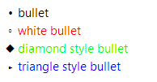 |
\p{{list:number;color:1}}({Text 1}) \p{{list:number;color:2}}({Text 2}) \p{{list:number;color:3}}({Text 3}) |
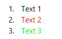 |
\p{{list:number;listnumber:(%d)}}({Text 1}) \p{{list:number;listnumber:(%d)}}({Text 2}) \p{{list:number;listnumber:(%d)}}({Text 3}) |
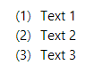 |
\p{{list:number;listnumber:(%c)}}({Text 1}) \p{{list:number;listnumber:(%c)}}({Text 2}) \p{{list:number;listnumber:(%c)}}({Text 3}) |
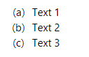 |
Hinweis: Wenn Sie Nicht-Listenelemente (leere Zeile, Absatz, Diagramm, Bild) zwischen den zwei Absatzlisten einfügen möchten, wird der Zahlenindex unterbrochen.
|
Es gibt 6 Werte der Eigenschaft list, einschließlich: bullet, bullet1, bullet2, number, number1 und number2
\p{{list:number1}}({Level 1}) \p{{list:number2}}({Level 2}) \p{{list:number }}({Level 3}) |
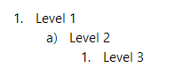 |
\p{{list:bullet2}}({Level 1}) \p{{list:bullet }}({Level 2}) \p{{list:bullet1}}({Level 3}) |
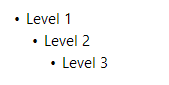 |
\p{{list:number}}({Level 1- Text 1}) \p{{list:number}}({Level 1- Text 2}) \p{{list:bullet;color:2}}({Level 2- AA}) \p{{list:bullet;color:2}}({Level 2- BB}) \p{{list:number2;color:3}}({Level 3- Text 1}) \p{{list:number1;color:4; listnumber:(%d)}}({Level 4- Text 1}) \p{{list:bullet1;color:6; listbullet:white bullet}}({Level 5- aa}) \p{{list:bullet1;color:6; listbullet:white bullet}}({Level 5- bb}) \p{{list:number1;color:4; listnumber:(%d)}}({Level 4- Text 2}) \p{{list:bullet1;color:6; listbullet:white bullet}}({Level 5- A1}) \p{{list:bullet1;color:6; listbullet:white bullet}}({Level 5- A2}) \p{{list:bullet2;color:12; listbullet:triangle}}({Level 6- a1}) \p{{list:number}}({Level 1- Text 3}) |
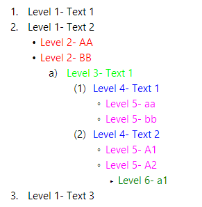 |
Ein Beispiel für Ebene 1 finden Sie unter Tipp im obigen Abschnitt. Hier wird das Einfügen von Nicht-Listenelemente auf Ebene 2 gezeigt. Sie können auch die Eigenschaft liststart verwenden, um den gewünschten Index für die Neustartliste zu definieren.
\p{{list:number}}({Level 1- Text 1}) \p{{list:number}}({Level 1- Text 2}) \p{{list:number1;color:4}}({Level 2- AA}) \p{{list:number1;color:4}}({Level 2- BB}) \p{{color:2}}({Not a list item}) \p{{list:number|number1;color:4;liststart:2|3}}({Level 2- CC}) \p{{list:number1;color:4}}({Level 2- DD}) \p{{list:number}}({Level 1- Text 3}) |
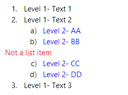 |
Sie können den Inhalt des Notizfensters auf einem physischen Drucker ausgeben oder ihn mit Hilfe des Treibers eines Drittanbieters, wie Microsoft Print to PDF, in einem PDF drucken.
Um eine attraktive Ausgabe zu erreichen, müssen Sie auf diese Einstellungen achten:
note.width (Einheiten = in/cm etc.) gesteuert. Standardwert = 0, was einer nicht festgelegten Breite entspricht.note.width = 0 ), ist die Seitenbreite des Notizfensters ungefähr gleich der Papiergröße – Rändern. Dies sollte einen zufriedenstellenden Ausdruck in PDF oder auf Papier erstellen.note.width festlegen, überschreiten Sie nicht Papiergröße – Ränder, sonst wird Ihr Text eventuell abgeschnitten.